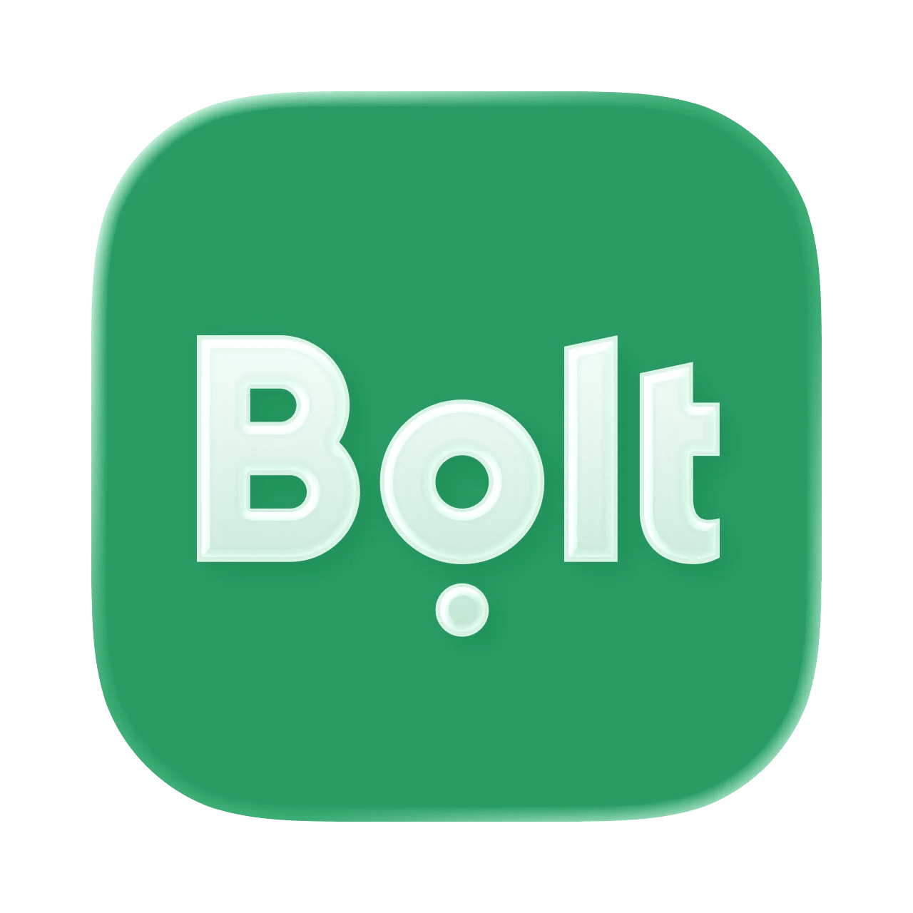

Таксі яке поруч

Про це розповів СЕО компанії Сергій Гришков, передає Інтерфакс-Україна.

Про це заявив віцепрем'єр-міністр з відновлення - міністр розвитку громад та територій Олексій Кулеба, інформує пресслужба міністерства.
Як повідомляється, скористатися сервісом таксі в нічний час можна буде в 28 містах: